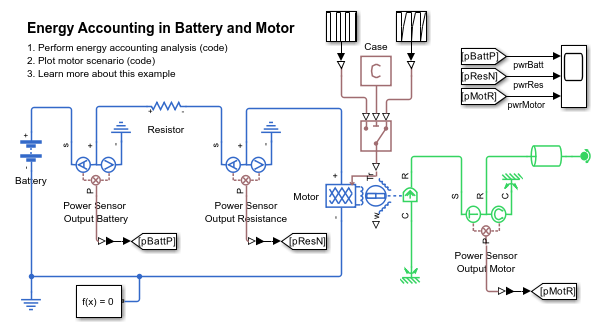
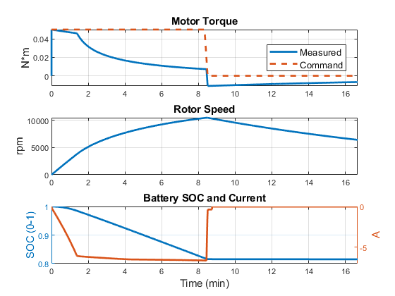
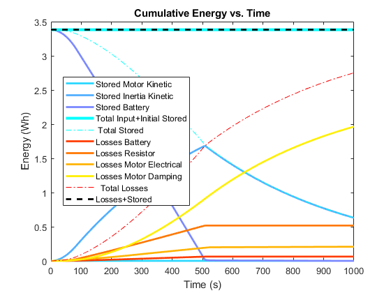
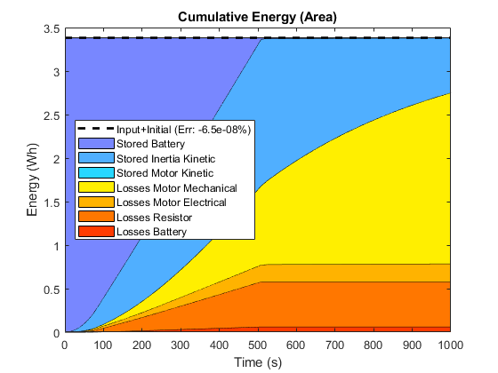
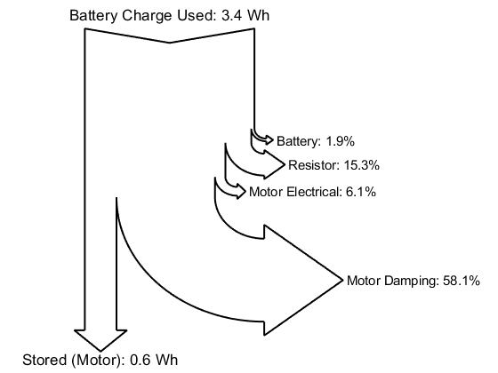
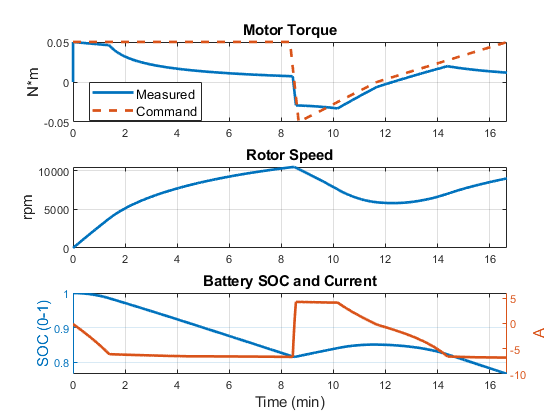
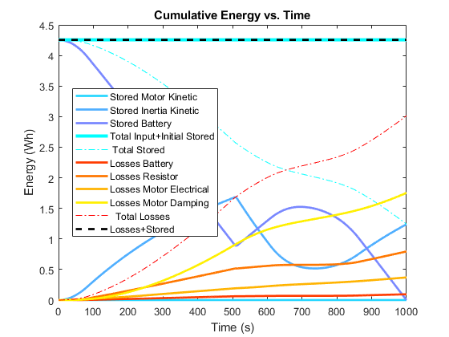
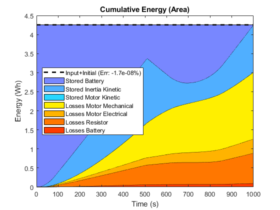
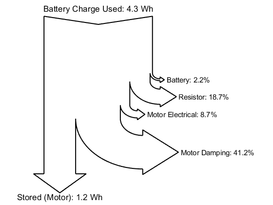

Energy Accounting, Battery and Motor Model
This example shows energy accounting for a motor and battery.
Contents
Model
The figure below shows an overview of the model which is composed by a small traction battery (4.5 Ah), a resistor (to represent electrical losses occuring between battery and motor), an electric machine (with 20W maximum power) and a mechanical load.
mdl = 'energyAcct_ElectroMech'; open_system('energyAcct_ElectroMech') set_param(find_system('energyAcct_ElectroMech','MatchFilter',@Simulink.match.allVariants,'FindAll', 'on','SearchDepth',1,'type','annotation','Tag','ModelFeatures'),'Interpreter','off')
Test 1: First Load Case
In this load case, the machine provides a positive torque for the first half of the cycle, then no torque.
set_param([mdl,'/Case'],'constant','1'); sim('energyAcct_ElectroMech'); energyAcct_ElectroMech_plot1scenario energyAcct_ElectroMech_calc   
Test 2: Second Load Case
In the second case, the machine provides a positive torque for the first half of the cycle, then a braking torque.
set_param([mdl,'/Case'],'constant','2'); sim('energyAcct_ElectroMech'); energyAcct_ElectroMech_plot1scenario energyAcct_ElectroMech_calc   
close all bdclose all